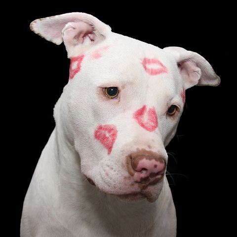
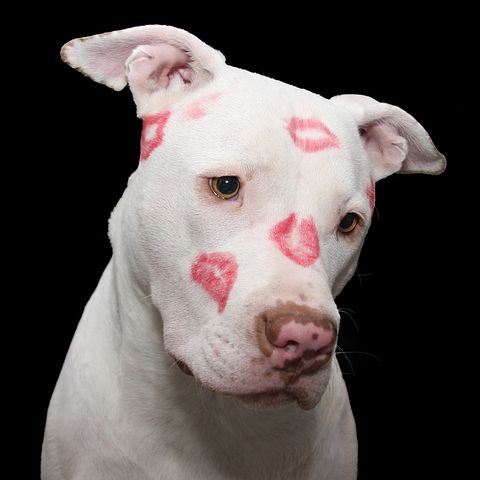

¿Que son los pitbulls?
Para mas informacion visitar:
 



¿Porque adoptar a un pitbull?
principales razones por las cuales adoptar a un pitbull son;
- Son protectores y leales
- Son muy inteligentes
- Son saludables
- Son muy activos y aventureros
- Comportamiento y una conducta intachables
- Es una raza guardiana
- Es muy tolerante con los pequeños y los adoran.
- Les encanta aprender cosas nuevas

¿Como educar a un cachorro de pitbull?
Lo Bassico que se debe saber para educarlos es;
- Evita regañar y castigar a tu perro cuando haga algo malo
- Debe aprender cómo morder para que no te haga daño una vez crezca
- Debes tratar de crear un vínculo basado en entendimiento
- Enseña a tu perro a quedarse solo poco a poco
- Enséñale las ordenes básicas de obediencia
- Has sesiones cortas de entrenamiento
- Acostumbrar a tu cachorro pitbull al bozal